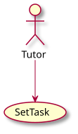
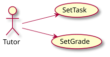
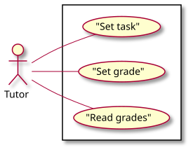
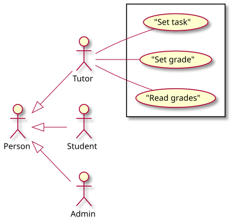
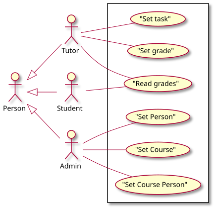
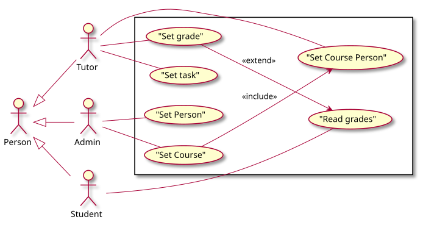

<!doctype html>
<html>
	<head>

		<title>Диаграммы UML</title>

		<link rel="stylesheet" href="../dist/reset.css">
		<link rel="stylesheet" href="../dist/reveal.css">
		<link rel="stylesheet" href="../dist/theme/beige.css" id="theme">

		<!-- Theme used for syntax highlighted code -->
		<link rel="stylesheet" href="../plugin/highlight/github.css" id="highlight-theme">

		<style>
			.container{
				display: flex;
			}
			.col{
				flex: 1;
			}
		</style>
		

	</head>
	<body>
		<div class="reveal">
			<div class="slides">

                <section data-markdown data-separator="----" data-separator-vertical="---" > 
<script type="text/template">

## Инструменты

---

### VS code

[https://altmanea.ru/it/slides/charcode/](https://altmanea.ru/it/slides/charcode/)

---

### PlantUML

[https://altmanea.ru/it/slides/techfig/#/0/1](https://altmanea.ru/it/slides/techfig/#/0/1)


---

### Работа с PlantUML

Для отрисовки лучше использовать сервер:


При отсутствии интернета – установите сервер локально с помощью [образа](https://hub.docker.com/r/plantuml/plantuml-server) докер.


----

## Диаграммы прецедентов

---

### Проектируемая система

Спроектируем систему, позволяющую преподавателям учитывать выполнение студентами заданий.


---

### Идея диаграмм прецедентов

- Диаграмма прецедентов используется для визуализации задач, решаемых системой.
- Объектами диаграммы являются:
	- actor (пользователь системы);
	- precedent (use case, сценарий использования системы).
- Объекты диаграммы состоят друг с другом в отношениях:
	- ассоциация;
	- обобщение;
	- и др.

---

### Объекты и отношения

<div class="container">
<div class="col" data-markdown>

```
@startuml

	actor Tutor
	usecase SetTask
	Tutor --> SetTask
	
@enduml
```

</div>
<div class="col">

</div>
</div>

---

### Сокращения

<div class="container">
<div class="col" data-markdown>

```
@startuml

	left to right direction

	actor Tutor as Tut
	usecase SetTask as Set
	Tut --> Set
	Tut --> (SetGrade)

@enduml
```

</div>
<div class="col">

</div>
</div>

---

### Границы системы

<div class="container">
<div class="col" data-markdown>

```
@startuml

	left to right direction

    actor Tutor

    rectangle {
        Tutor -- ("Set task")
        Tutor -- ("Set grade")
        Tutor -- ("Read grades")
    } 

@enduml
```

</div>
<div class="col">

</div>
</div>

---

### Отношение обобщение

<div class="container">
<div class="col" data-markdown>

```
@startuml

	left to right direction

    Person <|-- Tutor   
    Person <|-- Student
    Person <|-- Admin

    rectangle {
        Tutor -- ("Set task")
        Tutor -- ("Set grade")
        Tutor -- ("Read grades")
    } 

@enduml
```

</div>
<div class="col">

</div>
</div>

---

### Отношение обобщение

<div class="container">
<div class="col" data-markdown>

```
@startuml
	left to right direction	
    Person <|-- Tutor   
    Person <|-- Student
	Person <|-- Admin
    rectangle {
        Tutor -- ("Set task")
        Tutor -- ("Set grade")
        Tutor -- ("Read grades")
        Student -- ("Read grades")
        Admin -- ("Set Person")
        Admin -- ("Set Course")
        Admin -- ("Set Course Person")
    }
@enduml
```

</div>
<div class="col">

</div>
</div>

---

### Стереотипы

<div class="container">
<div class="col" data-markdown>

```
@startuml
	...
	rectangle {
        usecase ("Set grade") as SG
        usecase ("Read grades") as RG
        usecase ("Set Course") as SC
		usecase ("Set Course Person") as SCP
		...
    }

    SG --> RG : << extend >>
    SC --> SCP : << include >>

@enduml```

</div>
<div class="col">

</div>
</div>

--- 

### Обзор диаграмм прецедентов


</script>
                </section>

			</div>	
		</div>

		<script src="../dist/reveal.js"></script>
		<script src="../plugin/notes/notes.js"></script>
		<script src="../plugin/markdown/markdown.js"></script>
		<script src="../plugin/highlight/highlight.js"></script>
		<script src="../plugin/audio-slideshow/plugin.js"></script>
		<script src="../plugin/audio-slideshow/recorder.js"></script>
		<script src="../plugin/audio-slideshow/RecordRTC.js"></script>
		<script src="../plugin/menu/menu.js"></script>
		<script>
			Reveal.initialize({
				hash: true,
				width: '90%',
    			height: '100%',
				plugins: [ RevealMarkdown, RevealHighlight, RevealNotes, RevealAudioSlideshow, RevealAudioRecorder, RevealMenu ],
				audio: {
					prefix: 'audio/',
 					suffix: '.webm;codecs=opus',
					autoplay: false,
					advance: -1,
				},
				menu: {
					custom: [{
						title: 'Home',
						icon: '<i class="fa fa-home">',
						src: '../menu.html'
					}]
				}
			});
		</script>
	</body>
</html>
